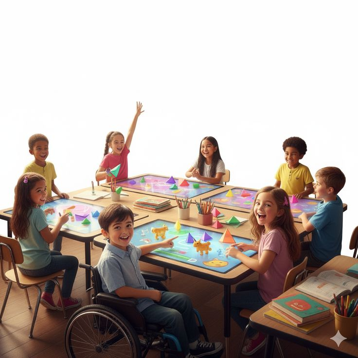
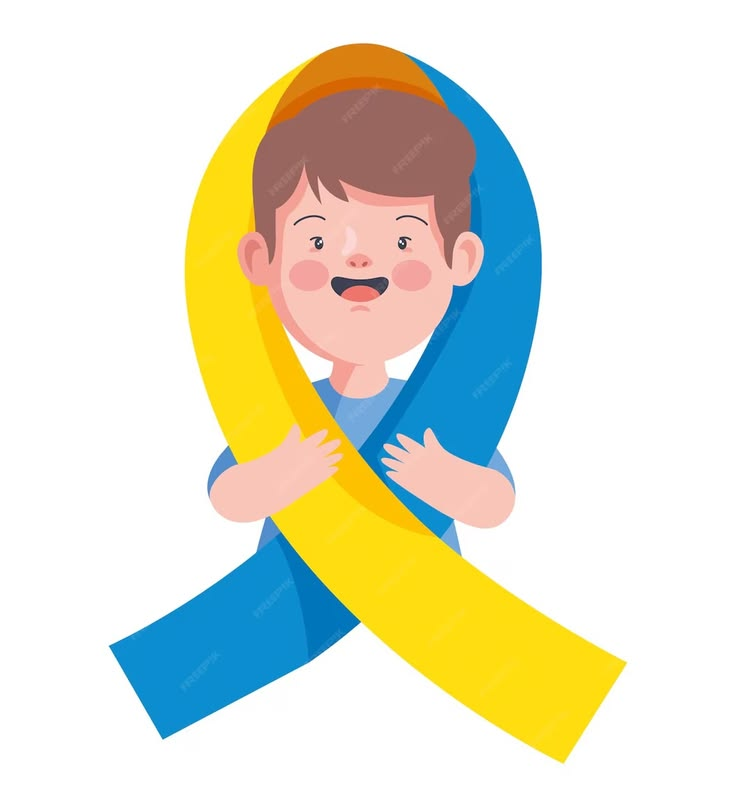
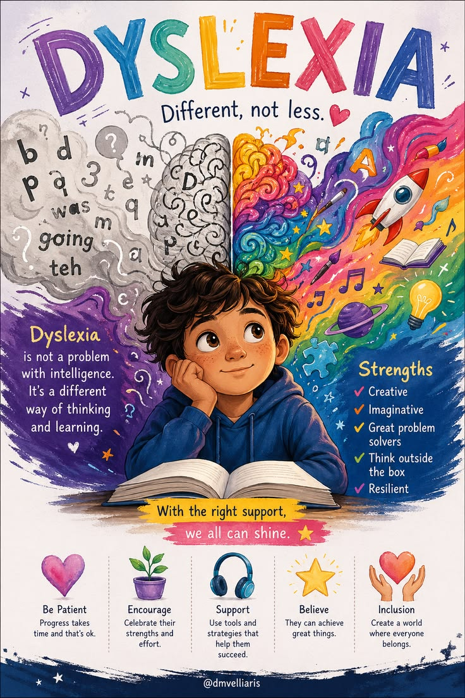
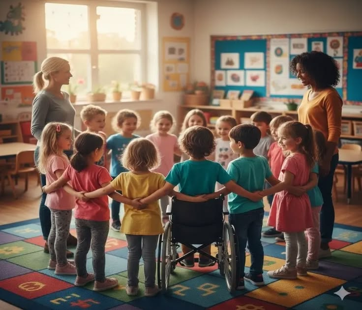
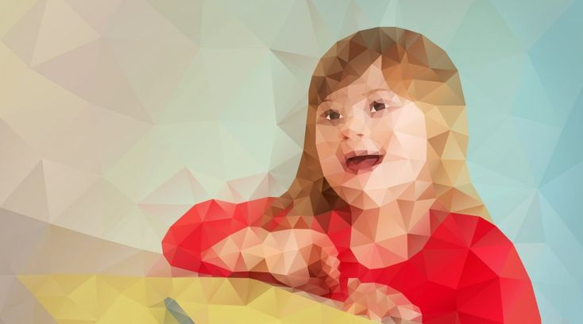
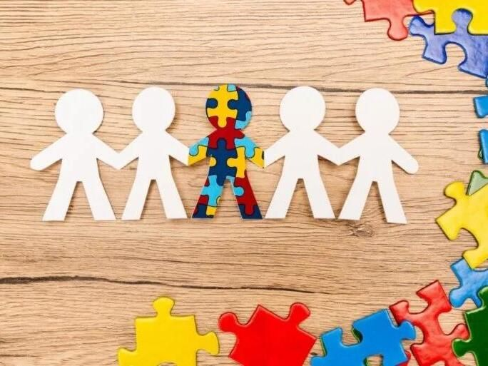

Autism Spectrum Disorder
Learn about varied communication, sensory, and information-processing experiences.
Read the autism guideThese introductions share general information about different experiences and support. No category describes every person who may use that label.
Every guide includes common characteristics, strengths, and practical ideas for inclusion.

Learn about varied communication, sensory, and information-processing experiences.
Read the autism guide
Explore individual development, strengths, and person-centered support.
Read the Down syndrome guide

Consider mobility, access, and how environments can include more people.
Read the physical disabilities guideLearn about learning differences and flexible approaches to education.
Read the learning disabilities guide
Explore reading and spelling differences, along with supportive ways to learn.
Read the dyslexia guide
Learn what hydrocephalus can mean and how individualized support can help.
Read the hydrocephalus guideThese guides are educational and are not medical advice, diagnostic tools, or a substitute for individualized support.